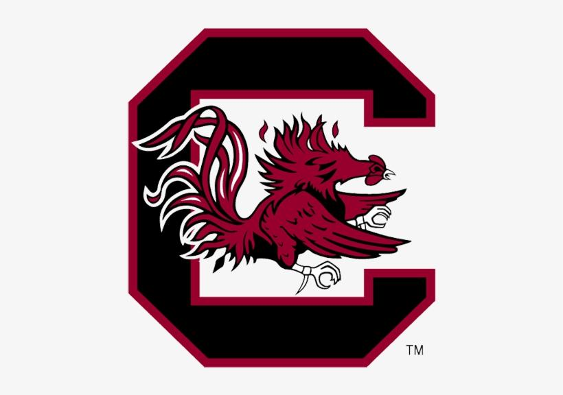
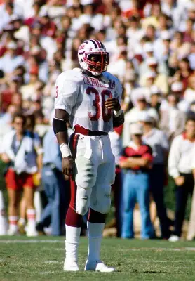
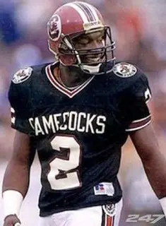
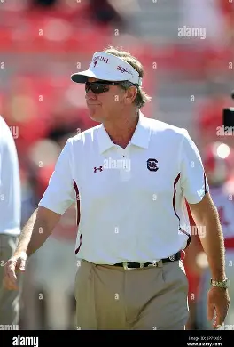

Gamecock Game Day Guide Tickets→
GameCock Football Milestones
Four defining seasons in Gamecock football history.
1892
First Football Season
1969
ACC Champions
1980
First Heisman Winner: George Rogers
2010
SEC East Champions
GameCock Legends
The players and leaders whose impact reaches far beyond the final whistle.

George Rodgers
1980 Heisman Trophy Winner
Rogers led the nation with 1,894 rushing yards in 1980 and still holds Carolina's career rushing record with 5,204 yards.

Sterling Sharpe
Record-Setting Receiver
Sharpe finished his Carolina career with 169 receptions, 2,497 receiving yards, and 17 touchdowns.

Steve Spurrier
Winningest Coach in Program History
Spurrier led Carolina to its first SEC East title and the program's only three 11-win seasons.
Ready For Next Kickoff?
Everything you need for an unforgettable Saturday at Williams-Brice Stadium is waiting in the Game-Day Guide.